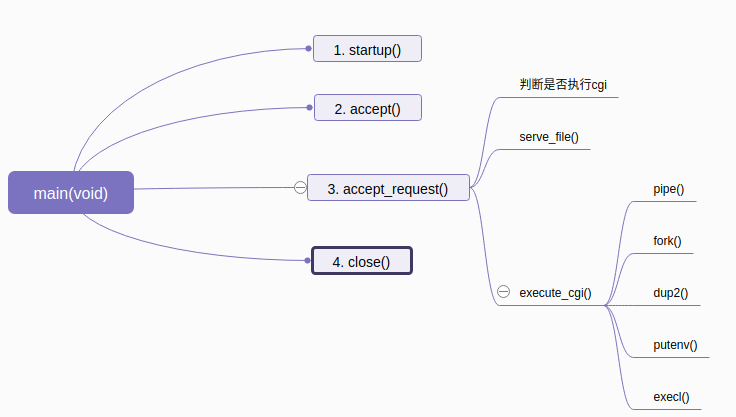
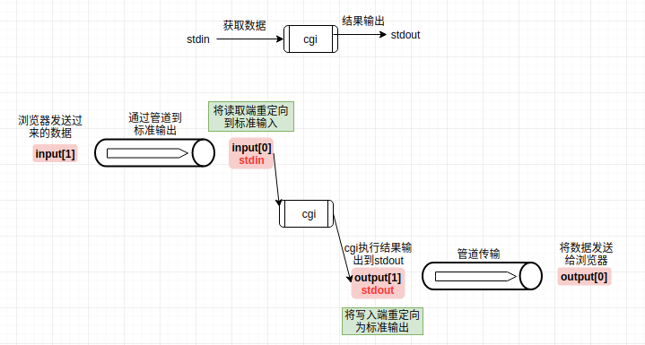

Tinyhttpd学习
Introduction
第一次的源代码阅读, 可能解释的不是很好, tinyhttpd网上都说是一个不错的学习源代码的例子， 所以就用这个上手了。
一些改动:
- 将cgi程序由perl语言改为python3
函数说明
- startup() 初始化服务端套接字, 如果端口号没有指定，则使用随机的端口号
- error_die() 打印服务端启动过程中的错误信息, 并退出程序
- accept_request() 处理客户端请求
- 获取请求类型(
GETorPOST) - 获取客户端要的网页文件的路径
- 使用stat()函数获取文件属性，判断是执行cgi还是发送普通网页
- 获取请求类型(
- get_line() 获取网络字符串的一行(换行符为:
\r\n) - unimplemented() 客户端请求不正确时(服务器不支持的请求)，发送给客户端501错误
- not_found_file() 客户端请求网页内容不存在返回该函数404
- cannot_execute() 不能执行cgi文件
- bad_request() 客户端请求错误
- serve_file() 发送网页文件到客户端
- execute_cgi() 执行cgi文件并将结果发送到客户端

cgi介绍
cgi(Common Gateway Interface)规定Web服务器调用其他程序的接口协议(就是如何调用程序， 传递参数， 输出结果), 详细的cgi简介.
cgi接口使用标准输入、标准输出和环境变量来交换数据
该程序中使用的环境变量:
REQUEST_METHOD: 浏览器请求方法CONTENT_LENGTH: post请求时的form表单的内容长度QUERY_STRING: get请求时form表单的内容放到该环境变量中
cgi从标准输入中获取数据，把数据输出到标准输出

Linux系统函数
- pipe()进程见通信的一种实现方法
// file_pipe[0] 为读取端(输出端), file_pipe[1]为写入端(输入端) int file_pipe[2]; pipe(file_pipe); - fork()创建线程函数
int ipid = fork(); // 创建线程 if(ipid == 0) { // 子线程 } else { // 主线程 } - dup2()重定向一个文件描述符
/** * stdin:0, stdout:1 * 下面两句将重定向stdin和stdout到file[0], 和file[1] */ dup2(file[0], 0); dup2(file[1], 1); - putenv()设置环境变量(只在该进程中生效)
- execl()在该进程中执行外部程序
// 程序绝对路径 程序名称 参数 目标 NULL execl("/bin/ls", "ls", "-al", "/etc/passwd", NULL);Notes: 该函数执行时，会用这个新的进程替代当前进程就是该函数执行完后，就会退出整个进程，而不会执行下面的代码, 所以通常使用子线程执行该函数